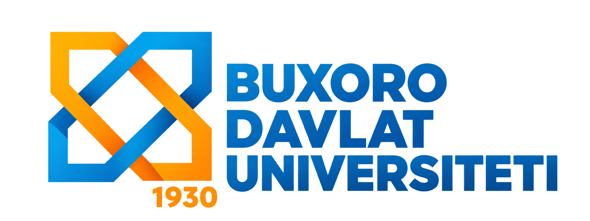
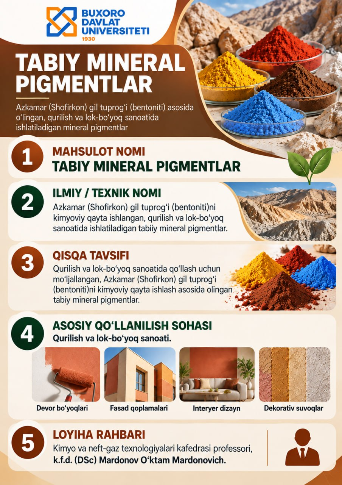

Mahsulot nomi
Tabiiy mineral pigmentlar.

Az kamar (Shofirkon) gil tuprog‘i — bentonit asosida olingan, qurilish va lok-bo‘yoq sanoatida qo‘llash uchun mo‘ljallangan tabiiy mineral pigmentlar.
Bog‘lanish
Tabiiy mineral pigmentlar.
Az kamar (Shofirkon) gil tuprog‘i (bentonit)ni kimyoviy qayta ishlash asosida olingan tabiiy mineral pigmentlar.
Qurilish va lok-bo‘yoq sanoatida qo‘llash uchun mo‘ljallangan mineral pigmentlar.
Kimyo va neft-gaz texnologiyalari kafedrasi professori, k.f.d. (DSc)
Mardonov O‘ktam Mardonovich